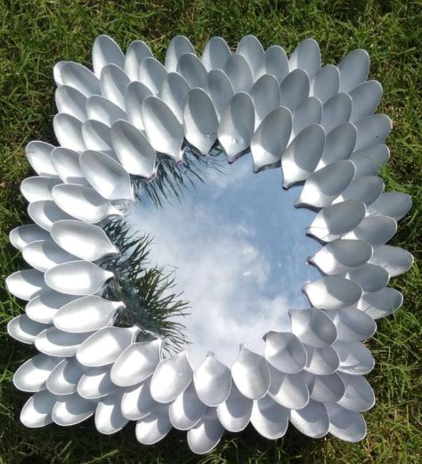

A. Bahan
- Sendok plastik bekas
- Cermin bulat kecil
- Kardus tebal sebagai alas
- Lem tembak dan lem stik
- Cat semprot warna perak
Sendok plastik bekas yang sudah tidak digunakan bisa diubah menjadi hiasan cermin yang indah dan unik.

| No | Bahan | Harga |
|---|---|---|
| 1 | Sendok plastik bekas | Rp 0 |
| 2 | Cermin bulat kecil | Rp 15.000 |
| 3 | Kardus tebal sebagai alas | Rp 0 |
| 4 | Lem tembak dan lem stik | Rp 10.000 |
| 5 | Cat semprot warna perak | Rp 20.000 |
| Total Harga Bahan | Rp 45.000 | |
Perkiraan harga jual cermin: Rp65.000
Laba (harga jual - harga modal): 65.000 - 45.000 = Rp20.000